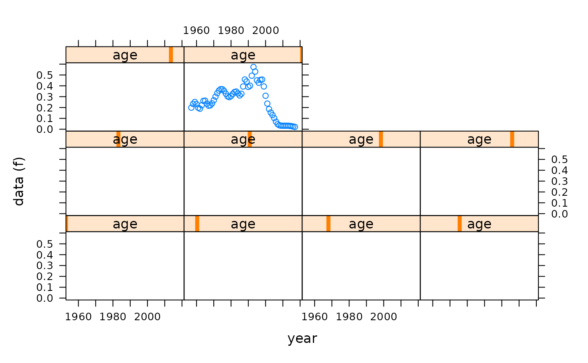

VPA-methods.RdImplements Pope's Virtual Population Analysis (VPA).
The method returns an object of class FLVPA class. This extends the FLAssess class although
the FLVPA class currently has the same slots as the FLAssess class and does not add new ones.
Objects can be created by calls of the form new("FLVPA", ...) or by calling the VPA function.
The other arguments to VPA are
A numeric with default "missing"
A Boolean with default TRUE
A character string which appended to the desc slot of the object
For the sake of speed, most of the calculations are carried out in C.
VPA(stock, ...)
Performs a VPA on the FLStock object. Other arguments are fratio, fit.plusgroup and desc, which are described above.
FLSepVPA
# use the ple4 data set
data(ple4)
ple4.test <- ple4
# Remove 0s and set as 1s
catch.n(ple4.test)[catch.n(ple4.test)==0] <- 1
# Remove harvest and stock.n values
stock.n(ple4.test)[] <- NA
harvest(ple4.test)[] <- NA
# Set Fs in final year and final ages
harvest(ple4.test)[,"2001"] <- harvest(ple4)[,"2001"]
harvest(ple4.test)["10",] <- harvest(ple4)["10",]
# Run the VPA
ple4.vpa <- VPA(ple4.test)
# Take a look at the harvest
plot(harvest(ple4.vpa))
